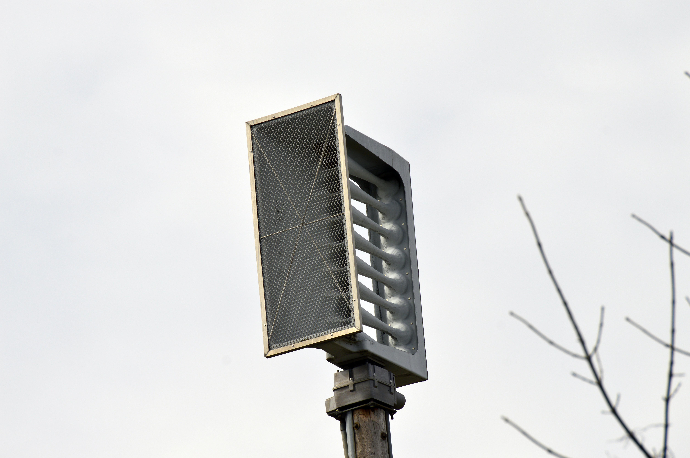

Whelen WPS-4008

This Whelen WPS-4008 is located at S 101st E Ave & E 63rd St.
GPS coordinates: 36.0727776, -95.864535
This siren runs on a Digital ESC-864, and peaks at 465 Hertz.
Siren Test Audio (3/29/2023):
Your browser does not support the audio element.